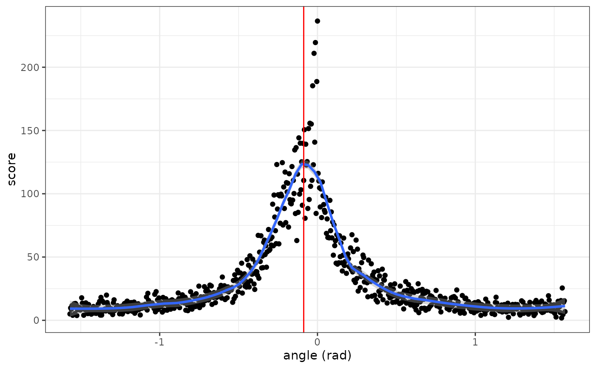
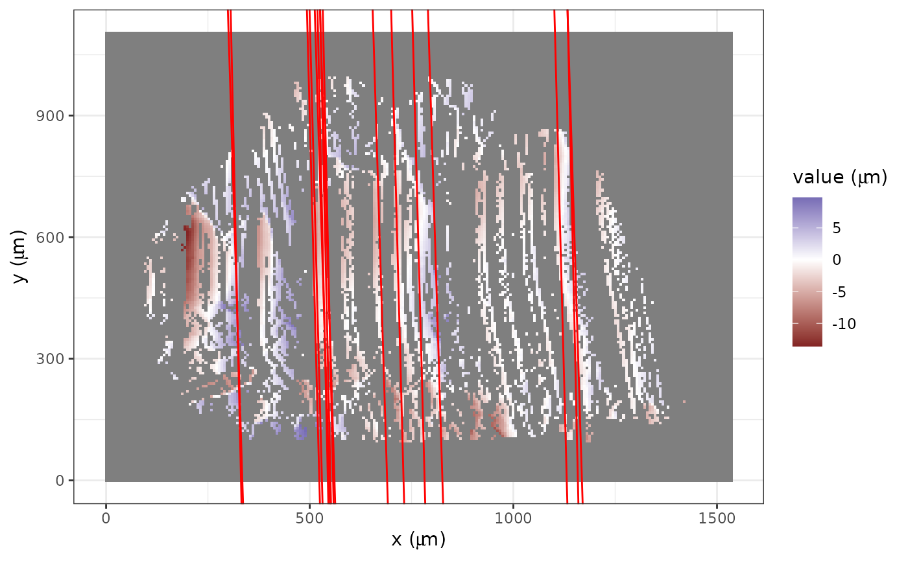
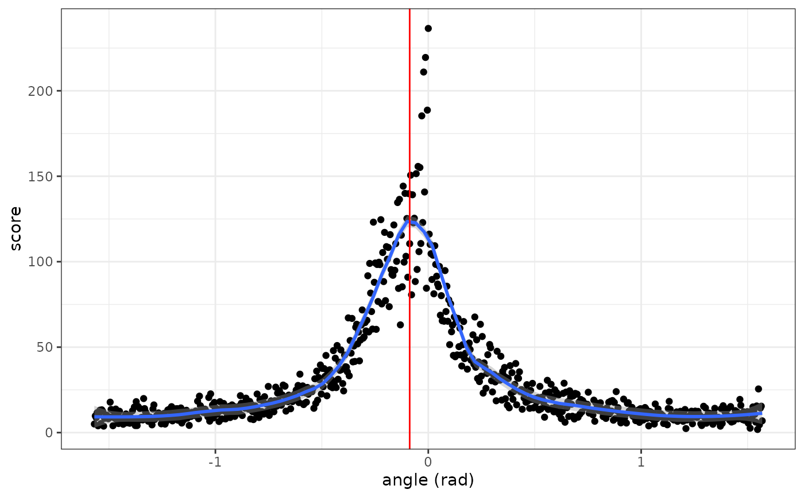
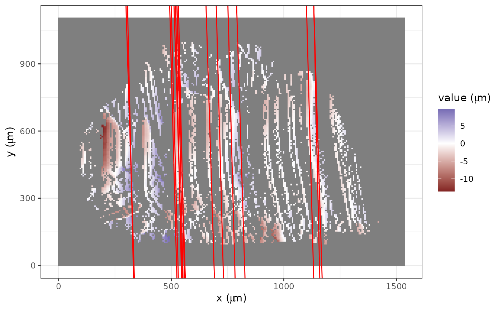

This function rotates an imputed x3p object with striations to the vertical direction.
Usage
x3p_vertical(
x3p,
freqs = c(0, 0.3, 0.7, 1),
ntheta = 720,
min_score_cut = 0.1,
ifplot = FALSE,
loess_span = 0.2
)Arguments
- x3p
An
x3pobject representing a topographic scan.- freqs
A numeric vector of length 4, representing color frequency quantiles used in
x3ptools::x3p_bin_stripes.- ntheta
An integer representing the number of bins along the theta axis used in
imager::hough_line.- min_score_cut
A numeric value representing the minimum score required in the Hough transformation.
- ifplot
A Boolean flag indicating whether to save ggplot lists in the output attributes.
- loess_span
A numeric value controlling the degree of smoothing.
Examples
x3p <- x3p_subsamples[[1]]
insidepoly_df <- x3p_insidepoly_df(x3p, mask_col = "#FF0000", concavity = 1.5, b = 1)
x3p_inner_nomiss_res <- df_rmtrend_x3p(insidepoly_df)
x3p_inner_impute <- x3p_impute(x3p_inner_nomiss_res,
ifout = FALSE, ifsave = FALSE, dir_name = NULL, ifplot = FALSE
)
x3p_bin_rotate <- x3p_vertical(x3p_inner_impute, min_score_cut = 5, ifplot = TRUE)
attr(x3p_bin_rotate, "nfline_red_plot")
 attr(x3p_bin_rotate, "MLE_loess_red_plot")
#> `geom_smooth()` using formula = 'y ~ x'

attr(x3p_bin_rotate, "nfline_blue_plot")

attr(x3p_bin_rotate, "MLE_loess_blue_plot")
#> `geom_smooth()` using formula = 'y ~ x'
if (interactive()) {
x3p_image_autosize(x3p_bin_rotate)
}
attr(x3p_bin_rotate, "MLE_loess_red_plot")
#> `geom_smooth()` using formula = 'y ~ x'

attr(x3p_bin_rotate, "nfline_blue_plot")

attr(x3p_bin_rotate, "MLE_loess_blue_plot")
#> `geom_smooth()` using formula = 'y ~ x'
if (interactive()) {
x3p_image_autosize(x3p_bin_rotate)
}